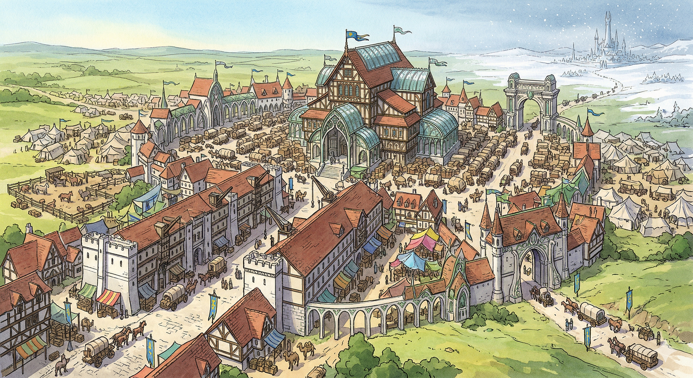

Overview
Fairfield stands at the junction of the Great Western Road and the Silverleaf Trade Route — a thriving trade town of 3,500 souls serving as the primary gateway between Crestfall and the elven Silverleaf Lands. The elven sister city of Starfall is visible in the distance across the border.
Geography
- Elevated ground with commanding views of the surrounding countryside
- Two days' hard ride west of Highreach, hours from the Silverleaf border
- Major crossroads connecting human and elven trade networks
Infrastructure
- Fortified warehouses storing international trade goods
- Customs facilities processing cross-border commerce
- Grand marketplace where enchanted and mundane goods flow freely
Economy
- Primary trade hub between Crestfall and the Silverleaf Lands
- Enchanted goods as common as mundane tools
- Artificers, alchemists, and enchanters serve international merchants